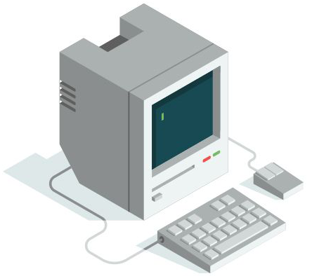

Kısayollar
Bu bölümde, sistem üzerinde gerekli hakimiyeti sağlamada bizlere kolaylıklar sunan bazı kısayollar hakkında önemli bilgileri öğrenip uygulayacağız. Kısayolları şimdi öğrenmemizin sebebi, ileride komutları uygularken bizlere kolaylıklar sağlayarak bize hız katacak olmalarıdır. Hem şimdi öğrenirsek eğitim boyunca da sürekli pratik yapma imkanı bulmuş olacağız.
Benim tecrübeme göre eğitim asla ezber üzerine kurulamaz. Öğrenme denilen olgu uygulama yani sürekli olarak yapılan pratik ile gerçekleşir. Bu bölümde öğreneceğiniz bilgiler belki başlangıç için fazlaca gözükebilir. Ancak her kısayolu ve her bilgiyi direk ve sürekli olarak kullanmasak bile burada olduğunu bilmeli, ve gerektiğinde dönüp tekrar bakabilmeliyiz. O yüzden buradaki bilgiler gözünüze fazla gözükürse endişe etmenize gerek yok. Zaten kısayol bilgileri temel Linux kullanımı için hayati bilgi olarak sayılmazlar, ancak zamanla göreceksiniz ki işlerimizi kolaylaştırarak Linux sistemini verimli şekilde kullanmamızı sağlıyor olacaklar. Neyse bu kadar açıklama yeter, gelin kısayollar konumuza terminal için kısayol atama işlemleri ile başlayalım.
Terminal Kısayolları
Genelde başka bir işletim sisteminden geçiş yapan arkadaşlar konsoldan bir komutu kopyalamak üzere, alıştıkları gibi Ctrl + C, kopyalanan komutu yapıştırmak için ise Ctrl + V tuş kombinasyonunu denerler. Ancak komut satırında görürler ki kopyalamak için bastıkları Ctrl + C tuş kombinasyonu ^C, yapıştırmak için bastıkları Ctrl + V tuş kombinasyonu ise ^V şeklinde konsola çıktı basmış. Tabi yanlış basmış olma ihtimaline karşı aynı işlemi genellikle tekrar deneyen arkadaşlar olur ancak yine aynı çıktıları alınca, anlaşılır ki o işler öyle olmuyormuş :) İşin şakası bir yana insanın zamanla edindiği alışkanlıklarını değiştirmesi zor olabiliyor. O yüzden Terminalde Ctrl + Shift + C ve Ctrl + Shift + V olan kopyala-yapıştır kısayolunu daha önceden alışmış olduğumuz gibi değiştirmek bizim en doğal hakkımız. Bunun için eğer isterseniz yalnızca kopyala-yapıştır kısayolunu değiştirebilir ya da diğer mevcut tüm kısayolları istediğiniz ve alıştığınız şekilde düzenleyebilirsiniz. Düzenlemek için, yeni Kali Linux versiyonlarında Terminal'in üst kısmında yer alan sekmelerden sırasıyla Düzenle > Tercihler > Kısayollar sekmelerini takip ederek açılan pencerede yer alan kısayolları dilediğiniz şekilde değiştirebilirsiniz.

Eğer eski bir versiyon kullanıyorsanız yukarıda sıraladığım adımlarla Terminal kısayollarına ulaşamamış olabilirsiniz. Ancak Terminal'in üst kısmında yer alan sekmelere kendiniz göz atarak "kısayollar" penceresine ulaşabilirsiniz. Sonuçta sürekli yenilikler olduğu için her versiyona özel bu tarz şeyleri yazmak gereksiz olacaktır. Kendiniz de biraz kurcalama ile çok rahat keşfedebilirsiniz.
Terminalin kısayollar penceresine ulaştığımıza göre artık istediğimiz şekilde değişiklik yapabiliriz. Buradaki kısayol seçeneklerine göz atın hangisi size uymuyorsa dilediğiniz şekilde düzenleyin. Ayrıca bilmediğiniz kısayollar varsa onlara da göz atmayı ihmal etmeyin.
Sistem Kısayolları
Şimdi ise sistem üzerindeki kısayollara göz atalım. Ben sürekli Terminali kullandığımız için Terminali açmak üzere bir kısayol oluşturmak istiyorum. Bunun için adım adım yapmamız gerekenlere bakalım. Başlamadan önce, kullandığınız sürüme göre sistem arayüzü değişiklik gösterebileceğinden, yönerge tam olarak sizi yönlendiremeyebilir. Ancak bunlar biraz kurcalayarak kendi kendinize bulamayacağınız şeyler değil. Ben yine de kullandığım sürüm üzerinden sizlere adımları aktarıyorum:
Öncelikle sistem ayarlarını(Ayarlar) açalım.
Sol tarafta yer alan ayarlar menüsünden "Aygıtlar" sekmesine tıklayalım.
Aygıtlar sekmesinde yer alan "Klavye" ayarını seçelim. Sağ tarafta "Klavye Kısayolları" şeklinde bir pencere açılacaktır.
Buradan en alta inerek altta yer alan " + " işaretine tıklayalım.
Karşımıza küçük bir "Özel Kısayol" penceresi açılacaktır.
Burada yer alan İsim kısmına herhangi bir ad verebilirsiniz ben daha sonra değiştirmek istediğimde hatırlamada kolaylık olsun diye "Terminal" adını verdim.
Komut kısmına terminalin açılması için gerekli olan komutu girmeliyiz ben terminali açmak istediğimden terminali açma komutu olan gnome-terminal komutunu yazdım.
Daha sonra bir alt kutucuğa istediğimiz kısayol tuş kombinasyonunu giriyoruz.
Ben Ctrl + Shift + T şeklinde ayarladım. Elbette siz kısayol tuş kombinasyonunu dilediğiniz gibi ayarlayabilirsiniz.

Son olarak "Ekle" butonuna tıklayarak kısayolumu atamış oluyorum. Artık ne zaman atadığım kısayol tuş kombinasyonunu (Ctrl+Shift+T) uygularsam yeni bir Terminal ekranı açılıyor olacak. Ben burada yeni bir Terminal açma üzerinden örnek verdim, ancak burada atayacağınız kısayol herhangi başka işlev için de olabilir, o sizlere kalmış. Ayrıca; bu kısayollar menüsünde yer alan kısayollara da göz atıp, eğer isterseniz dilediğiniz şekilde değiştirebilirsiniz.
Bash Shell Kısayolları
Bash Shell programının ne işe yaradığını daha önceki kısımlarda açıklamıştık. Şimdi ise komut yazarken işimizi kolaylaştıracak olan bazı Bash Shell kısayollarını göreceğiz. Burada verilenleri direk olarak kullanmanız beklenmediğini daha önceki kısımlarda söylemiştim. Kısayolların oturması için çokça pratik gerek. Pratik yaptıkça zaten zamanla istemeden de olsa öğrenmiş ve farkında olmadan kullanıyor olacağız emin olun.
İmleç Hareketleri:
| Kısayollar |
Açıklaması |
| Ctrl + A |
imleç satır başına gider. |
| Ctrl + E |
imleç satır sonuna gider. |
| Ctrl + P |
önce çalıştırılmış komut gösterilir. |
| Ctrl + N |
sonra çalıştırılmış komut gösterilir. |
| Alt + B |
sola doğru(geri) bir kelime kadar imleç kayar. |
| Alt + F |
sağa doğru(ileri) bir kelime kadar imleç kayar. |
| Ctrl + F |
imleç bir karakter ileri gider. |
| Ctrl + B |
imleç bir karakter geri gider. |
| Ctrl + XX |
geçerli imleç konumundan, imleç satır başına geçer. |
Düzenleme
| Kısayollar |
Açıklaması |
| Ctrl + L |
ekran temizlenir ve imleç en üst satıra çıkar yani clear komutu ile aynı işlemi yapar. |
| Alt + D |
imleçten sonraki kelimeyi siler. |
| Ctrl + U |
imlecin solundaki her şeyi siler. |
| Ctrl + K |
imlecin sağındaki her şeyi siler. |
| Ctrl + Y |
kesilmiş olan son metni ekrana yapıştırır. |
| Esc + T |
imleçten önceki iki kelime yer değiştir. |
| Ctrl + H |
sola doğru tek tek karakterleri siler.(yani Backspace gibi davranır) |
| Alt + U |
iimlecin başladığı yerden sözcüğün sonuna kadar bütün karakterleri büyük harf yapar. |
| Alt + L |
imlecin başladığı yerden sözcüğün sonuna kadar bütün karakterleri küçük harf yapar. |
| Alt + C |
imlecin üstünde bulunduğu karakteri büyük harf yapar. |
| Ctrl + C |
komutu durdurur/keser. |
| Ctrl + R |
daha önce kullanılmış olan komutlar arasında arama yapma ve o komutu tekrardan kullanma imkanı sağlar. |
| Ctrl + Z |
çalışan süreci arka plana atar ve duraklatır. |
| Ctrl + D |
Veri girişinin sonunu temsil eden yani mevcut terminali sonlandırır. |
| TAB |
Otomatik tamamlamayı sağlar. Konsol üzerinden bir kısmını yazmış olduğunuz, dosya, dizin ve komut türevi her türlü ifadeyi otomatik tamamlar. Ayrıca iki kez üst üste basıldığında da yazmış olduğunuz ifade ile başlayan tüm içeriği listeler. |
Burada belirttiklerim dışında pek çok kısayol mevcut ancak ben hepsine değinmedim. Kaynak olarak kullandığım bu adresten veya internette yer alan ücretsiz bir çok kaynaktan çok rahat şekilde yeni kısayol bilgilerine ulaşabilirsiniz.
Aynı Anda Birden Fazla Komut Kullanımı
Hazır konu kısayollardan ve pratiklikten açılmışken aynı anda birden fazla komut kullanımını da anlatmadan geçmek olmaz. Bunun için üç farklı yol izleyebiliriz.
Birincisi yan yana olacak şekilde && operatörünü kullanmaktır, hemen bu yolu deneyelim. Ancak henüz tam olarak komutları öğrenmediğimiz için önceden kullandığımız komutlardan yararlanalım. Bunun için PATH ve TERM ortam değişkenlerini kullanarak aynı anda çıktı almak üzere echo $PATH && echo $TERM komutunu konsola yazalım.

Çıktıda görüldüğü gibi PATH ve TERM ortam değişkenlerinin değerleri, yazdığımız iki komutun arasına koymuş olduğumuz && operatörü sayesinde aynı anda basılmış oldu.
Gelin şimdi de diğer bir yol olan noktalı virgül " ; " kullanarak aynı işlemi tekrar edelim.

Ve sonuç bizleri şaşırtmayarak yine birleşik komut içerisinde yazdığımız ortam değişkenlerinin değerlerini aynı anda ekrana bastırdı.
Son olarak || operatörünü ele alalım. Bu operatör diğerlerinden farklı olarak, kullandığımızda eğer verilen komutlardan birincisi başarısız olursa diğerini basar. Bu operatörü de kısaca şu örnek ile inceleyelim.

Burada 1. komut başarısız olduğu için 2. komut ekrana basılmış oldu. Yani bir nevi önlem amaçlı bir kullanımdır. Biz konsola bu kullanım ile diyoruz ki; "Eğer verdiğim ilk komut başarısız olursa ikinci komutu çalıştır." Yani bu durumda eğer ilk komut başarısız olursa, hemen devreye ikinci komut girecektir, ancak ilk komut başarılı olursa ikinci komut çalışmayacaktır.

Kısayol Koruması
Buraya gelene kadar birçok kısayoldan ve bu kısayolların avantajlarından bahsettik ancak kısayollar bazen istemediğimiz sonuçlar doğurabiliyor. Biz de böyle durumlarla karşılaşmamak adına şimdiden ufak önlemler alsak iyi olur. Önceki kısımlarda Ctrl+D kısayolunun mevcut konsolu kapattığını öğrenmiştik. Bu çok kullanışlı bir kısayol olsa da bazen yanlışlıkla kullanıldığında konsolun ansızın kapanmasına neden olabiliyor. Yani konsolun anlık kapanmasına karşı bir kontrol mekanizması oluşturmamız sonradan üzülmemek için şart. Bu kontrol sağlama imkanını bize ignoreeof verir. ignoreeof tanımını kullanmanın 2 farklı yolu vardır. Bunlardan birisi sadece mevcut Terminal için geçerli diğeri ise sürekli ve oturumdaki tüm Terminallerde geçerli olan kullanımlardır.
Sürekli ve tüm Terminal ekranlarında geçerli olsun istiyorsak:
Gerekli ayarlamaları yapmak üzere komut satırımıza nano -w ~/.bashrc komutunu veriyoruz ve .bashrc dosyasının en alt satırına export IGNOREEOF=2 yazıp Ctrl + X tuş kombinasyonunu kullanarak dosyanın ismini değiştirmeden kaydederek çıkıyoruz.(Bütün kullanıcılarda bu korumayı sağlamak için değişikliği bash.bashrc dosyasında yapmamız gerektiğini daha önceki kısımlardan biliyorsunuz.)
Böylece koruma sistemi kuruldu ve artık test etmeye hazır. Komut satırındayken iki kez Ctrl + D tuş kombinasyonunu uygularsak konsol bize iki defa uyarıda bulunacaktır ve çıkmak için ancak 3. defa bastığımızda ya da komut satırına exit yazdığımızda konsol kapanacaktır.

Burada biz IGNOREEOF=2 şeklinde belirttik ve bu tanımlama bizi 2 kez Ctrl + D kapatma kombinasyonundan korudu. Ancak sizler bu bana yetmez ya da 2 kez fazla olur diyorsanız tanımı istediğiniz değerlerde ayarlayabilirsiniz. Örneğin IGNOREEOF=4 olabilir ya da IGNOREEOF=1 olabilir, bu değer tamamen size kalmış. Ayrıca bu kapanmaya karşı koruma özelliğini kapatmak isterseniz eklemiş olduğunuz ifadeyi dosyadan silerek dosyayı kaydetmeniz yeterli olacaktır.
Şimdi de yalnızca mevcut Terminal için geçici koruma nasıl sağlarız ona değinelim:
Koruma katmanı ne kadar hayat kurtarıcı olsa da sürekli olması bazen rahatsız edici olabilir. İşte bu noktada sadece önemli ve gerekli gördüğümüz zaman bu özelliği açıp kapatma seçeneğine sahibiz. Bunu da iki farklı yolla yapabiliriz.
İlk yol, komut satırına ignoreeof=2 şeklinde komut vermek. Bu komut sayesinde mevcut Terminal ekranı ancak 3.kez Ctrl + D tuş kombinasyonu uygulandığında kapanacaktır. Buradaki sayıyı dilediğiniz gibi değiştirebileceğinizi biliyorsunuz. Eğer bu özelliği devre dışı bırakmak istersek komut satırına ignoreeof=0 yazmamız yeterli.
İkinci yöntem ise komut satırına set -o ignoreeof yazmak. Bu komut ile de mevcut komut satırımız ancak 11.kez Ctrl + D yapmamız sonucunda kapanacaktır. Bunun haricinde bir de exit komutunu verirsek konsol ekranı anında sonlanır. Bu özelliği devre dışı bırakmak isterseniz de, komut satırına set +o ignoreeof yazmanız yeterli olacaktır.


Alıştırmalar Hakkında
Öğrendiğiniz bilgilerin kalıcı olması için bolca alıştırma yapmalısınız. Burada yer alan alıştırma faaliyetleri dışında, konuyu öğrendiğinizi hissede kadar kendiniz de bolca pratik yapın lütfen. Aksi halde öğrendiğiniz bilgiler kısa sürede unutulup gidecektir.
Terminal kısayollarından; "Tümünü Seç" kısayolu için Ctrl + A kısayolunu ata ve atadığın kısayolu test et.
Terminal kısayollarından; Terminali hızlıca boyutlandırabilmek için "Yakınlaştır" kısayoluna + , "Uzaklaştır" kısayoluna - kısayol tuş kombinasyonlarını ata. Daha sonra atadığın kısayolları kullanarak terminal ekranının boyutunu değiştir.
Sistem kısayollarından; xterm aracını açmak için kısayol atayın ve kısayolunuzu çalıştırın. (xterm aracını çalıştıracak komut xterm dir)
Sistem kısayollarında; var olan kısayollardan istediğiniz bir tanesinin kısayol tuş kombinasyonunu değiştirerek, değiştirdiğiniz kısayolu uygulayarak değişikliği teyit edin.
Öğrendiğimiz bash shell kısayolları ile konsol üzerinde alıştırmalar yapın.
xterm komutu ile gnome-terminal komutlarını birlikte kullanarak aynı anda çalıştırın.
Mevcut konsol ekranını(çalışmakta olduğunuz Terminal) Ctrl + D tuş kombinasyonu ile ani kapanmalara karşı korumak için; 3 kez Ctrl + D tuş kombinasyonu uygulanırsa Terminalin kapanmasını sağlayın.
Geri Bildirimde Bulunun
Sizlere daha verimli bir kaynak sunabilmemiz için, uygulamada veya dokümantasyonlarda yer alan tüm hata ve eksiklerimizi bize bildirebilirsiniz.
Geri Bildirimde Bulunun